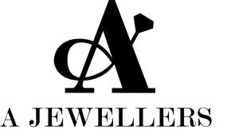

Trade Mark Journal No.2025/014 4 April 2025
UK00004173266 13 March 2025 (9,14,20,25,35,42)

- Class 9
- Jewellery that communicates data. Downloadable and non-downloadable software applications for mobile devices and computers for jewellery design, customisation, and visualisation; downloadable software for virtual jewellery try-on; downloadable software for personalised jewellery recommendations; downloadable electronic publications, magazines, and instructional materials related to jewellery, gemstones, and fashion accessories; software for managing digital jewellery collections and inventories; software for immersive jewellery shopping experiences; downloadable software for providing educational content and tutorials on jewellery craftsmanship and gemstone identification.
- Class 14
- Jewellery (Paste -); Jewellery articles; Jewellery being articles of precious metals; Jewellery being articles of precious stones; Jewellery boxes; Jewellery boxes [fitted]; Jewellery boxes and watch boxes; Jewellery boxes of precious metal; Jewellery boxes of precious metals; Jewellery brooches; Jewellery cases; Jewellery cases [caskets or boxes]; Jewellery cases [caskets]; Jewellery cases [caskets] of precious metal; Jewellery cases [fitted]; Jewellery cases of precious metal; Jewellery caskets; Jewellery caskets of precious metal; Jewellery chain; Jewellery chain of precious metal for anklets; Jewellery chain of precious metal for bracelets; Jewellery chain of precious metal for necklaces; Jewellery chains; Jewellery charms; Jewellery coated with precious metal alloys; Jewellery coated with precious metals; Jewellery containing gold; Jewellery fashioned from bronze; Jewellery fashioned from non-precious metals; Jewellery fashioned of cultured pearls; Jewellery fashioned of precious metals; Jewellery fashioned of semi-precious stones; Jewellery findings; Jewellery foot chains; Jewellery for personal adornment; Jewellery for personal wear; Jewellery hat pins; Jewellery in non-precious metals; Jewellery in precious metals; Jewellery in semi-precious metals; Jewellery in the form of beads; Jewellery incorporating diamonds; Jewellery incorporating pearls; Jewellery incorporating precious stones; Jewellery items; Jewellery made from gold; Jewellery made from silver; Jewellery made of bronze; Jewellery made of crystal; Jewellery made of crystal coated with precious metals; Jewellery made of glass; Jewellery made of non-precious metal; Jewellery made of plastics; Jewellery made of plated precious metals; Jewellery made of precious metals; Jewellery made of precious stones; Jewellery made of semi-precious materials; Jewellery of precious metals; Jewellery of yellow amber; Jewellery plated with precious metals; Jewellery products; Jewellery rolls; Jewellery rope chain for anklets; Jewellery rope chain for bracelets; Jewellery rope chain for necklaces; Jewellery stones; Jewellery, including imitation jewellery and plastic jewellery.
- Class 20
- Jewellery organiser displays; Jewellery storage solutions, including jewellery boxes, jewellery cases, jewellery organisers, and display stands not made of precious metal; non-metallic safes for storing jewellery; furniture for jewellery stores, including display counters, showcases, and shelving units; decorative storage containers for rings, necklaces, and other jewellery items; portable jewellery storage cases; gift boxes for jewellery presentation made of plastic, wood, or composite materials; non-metallic furniture and fittings for jewellery exhibitions and showcases.
- Class 25
- Clothing, including t-shirts, sweatshirts, hoodies, dresses, jackets, and scarves; headwear, including hats, caps, beanies, and visors; branded apparel featuring jewellery-inspired designs; gloves, belts, and socks; footwear, including shoes and sandals; fashion accessories in the form of wearable textiles; customised and limited-edition clothing featuring company branding or jewellery motifs; outerwear, such as coats and vests, featuring jewellery-inspired embellishments.
- Class 35
- Retail and wholesale services for jewellery, watches, and related accessories; online retail store services for jewellery, fashion accessories, and timepieces; Online retail services connected with the sale of jewellery; advertising, marketing, and promotional services for jewellery brands; business consultancy and management services in the jewellery sector; organisation of trade shows and exhibitions for jewellery and fashion accessories; influencer marketing and affiliate marketing programs for jewellery promotions; customer loyalty programs and membership services for jewellery purchases; Retail services connected with the sale of subscription boxes containing jewellery; import and export agency services for jewellery and precious stones; business administration services for jewellery businesses, including inventory management and order fulfilment solutions.
- Class 42
- Jewellery design services; custom design services for bespoke and made-to-order jewellery; consultation services in the field of jewellery design and gemstone selection; jewellery design using 3D modelling software and computer-aided design (CAD) tools; providing online, non-downloadable design tools for customers to customise jewellery; authentication and certification services for jewellery and gemstones; technological research and development services in jewellery innovation, including smart jewellery; hosting an online platform for jewellery customisation and virtual fitting; product development and prototyping services for new jewellery designs.
A Jewellers DWC-LLC
Representative: AAJ Traders Ltd